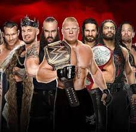
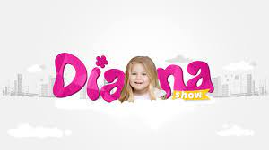

The first kids channel of the list, Vlad and Niki features two brothers. The videos are mostly of the two playing and engaging in usual children activities.
The channel has only been around since 2018, making its appearance in the list even more impressive.
Into the 9’th most subscribed youtube channel, we have 5-Minute Crafts, a DIY channel that covers a whole range of subjects.
Originally started in 2016, it’s gone from strength to strength since and is the most subscribed to channel of its type.
Along with craft videos, 5-Minute Crafts also includes life hacks for every part of your life, along with content for kids and parents.
Sticking with music, we have the Indian channel Zee Music Company (also not the only Indian music channel in the list).
The channel’s content is made up of music videos, some of which are from films and television shows. The channel says it’s aggregated over 220k hours of video content.
Kicking off the list is the most subscribed to channel in the Russian Federation. Aimed at kids it features Like Nastya, and her parents who run the channel, recreating scenes from films and TV shows, singing songs and nursery rhymes, and going on trips.
Like Nastya also has another channel, with 15m subscribers, simply called ‘Like Nastya’, it puts out similar videos, but with more of a focus on playing and trips to amusement and activity parks.
Video

6. WWE (78.7m subscribers)
WWE, or World Wrestling Entertainment, is the most popular sports channel on the list.
Hugely popular the world over, WWE have pulled in tens of millions of subscribers from every corner of the planet.
The WWE channel has recaps of recent matches, full matches, and plenty of footage from their archives, including classic fights and interviews.
Video

5. Kids Diana Show (80.4m subscribers)
Children’s channels are hugely popular on YouTube, so we have a few like this in the list. This one is focused on a girl called Diana, with the content focusing on her life and what it’s like to be a kid (who is constantly filmed, I guess).
The videos include toy unboxings, challenges, trips out and about, and other activities that children get up to. A concept that would have sounded bizarre just a few years ago, but here we are.
Into the final five and we have Sony Entertainment Television, or SET, India.
Obviously Sony-owned, this Hindi-language channel is run by the Indian television channel of the same name.
The channel has what you’d expect from a TV channel including full episodes of TV shows, teaser trailers, and episode clips.